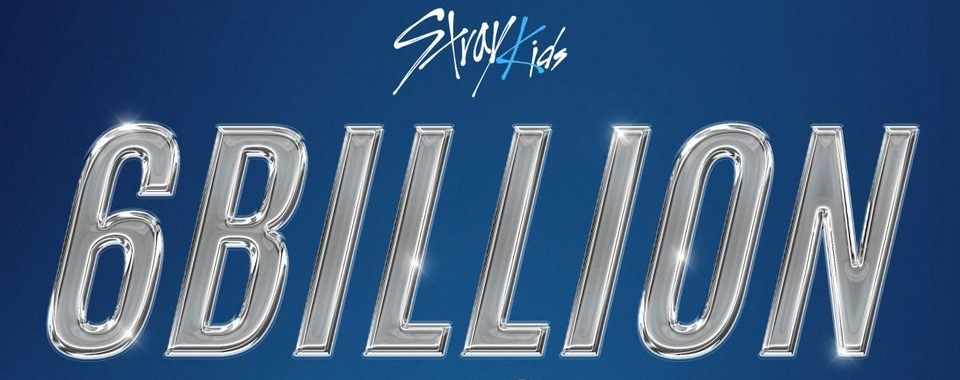

New Mini Album
Stray Kids "(樂)(LALALALA)" M/V
“락 (樂) (LALALALA)” is the lead single from Stray Kids' album, 樂-STAR (ROCKSTAR). On this electric guitar-assisted noise pop track, Stray Kids encourage their listeners to push through any adversity that may come their way using the power of music. In the music video, Stray Kids have the time of their lives in a chaotic world of their own. The video features a band of young kids performing on stage despite being challenged by umihoshi, a Japanese sea priest. Stray Kids use the power of their music and teamwork to help the band defeat the monster and finish their performance. As the video progresses, they eliminate the feelings of 喜,怒 and 哀 to leave 樂, their version of happiness.
"ROCK-STAR" Press Conference
üê∫: I was once asked if I would change my future if I could. I answered "no". if I had the opportunity, I could try to correct the mistakes I made in the past. but if I changed the past, then I could not be where I am now. the years I was a trainee, met the members... I just don't want to change anything. I think it's thanks to the members that I feel like I have nothing to regret about my past
üê∞ about Billboard: all thanks to Stay. I think that all these happy moments and events exist thanks to those who love our songs. we don't know how this album will perform, but I hope a lot of people love it
üê∑üê∞ about "LALALALA": it is not always decided in advance that the title track will be a 3RACHA song. but as the production team of Stray Kids, we are involved in the creation of the title track. in the future, the song is selected after considering all the opinions of the company and participants. Since our other members contribute so much not only to the music, but also to the dancing and vocals, it's more like an album that we're all working on together
ü¶ô about "Cover Me": when creating this song, I immediately imagined it as a b-side track for all 8 members, because in this way it would evoke a delightful and stunning experience. the agency and our team listened to the song and decided to include it in the album
üêø: the rock star of our group.... Seungmin, who sits to my left. If you look at his life, he really has his own clear philosophy. even stronger than Changbin and I think that's cool
üê• about "LALALALA": when we were choosing the title song, we listened to many songs, everyone shared their opinion on what kind of music it was and what we thought about it. Of course, everyone had different opinions, but we listened carefully to everyone and made a decision. While we were thinking about what fans might like, we also kept in mind that we wanted to show a special color in this album. so I think we chose the songs unanimously
üê∂ about Billboard: Having Stray Kids on the Billboard chart is still an unforgettable and precious memory. We felt a lot of pressure during the preparation of the album, but we want each of you to enjoy the concept of "ROCK-STAR". I was amazed and honored that we were on the same chart as Taylor Swift. The only thing I'm thinking now is that we have to work even harder to live up to this
ü¶ä: I think our teamwork is what makes us work even harder. everything feels different when I'm with Stray Kids! and Stay also motivate us to move on. I really feel proud every time I see that you like what we are working on

Stray Kids surpass 6 billion streams on Spotify
Stray Kids are the only 4th generation group, 2nd boy group and 4th K-Pop group to cross this milestone.

Stray Kids win the Show!Music Core.
As for the winners, Stray Kids, IVE, and BTS' Jungkook were the nominees, but it was Stray Kids who took the win with "LALALALA".
Stray Kids won first place on Music Core for the first time after six years into their career!